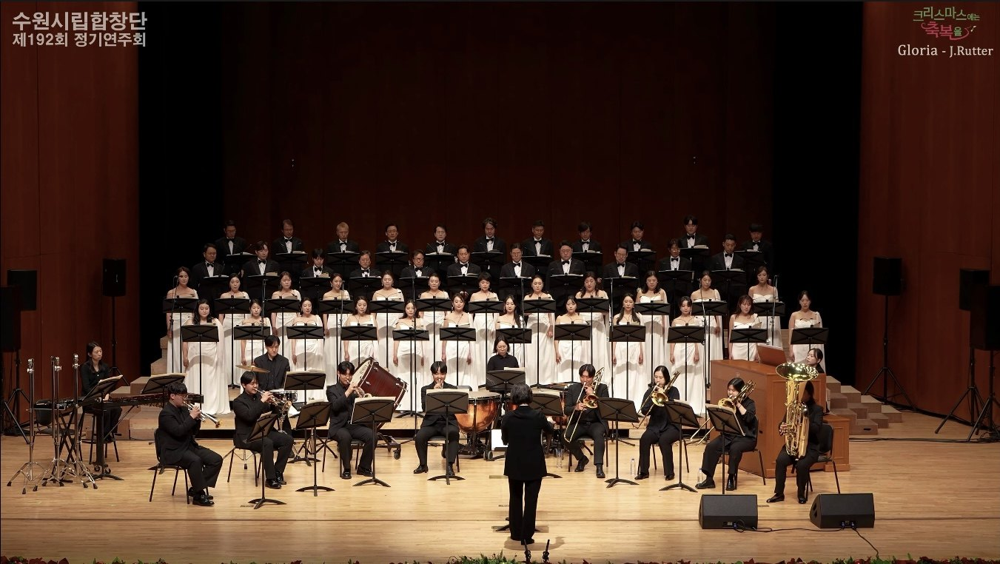
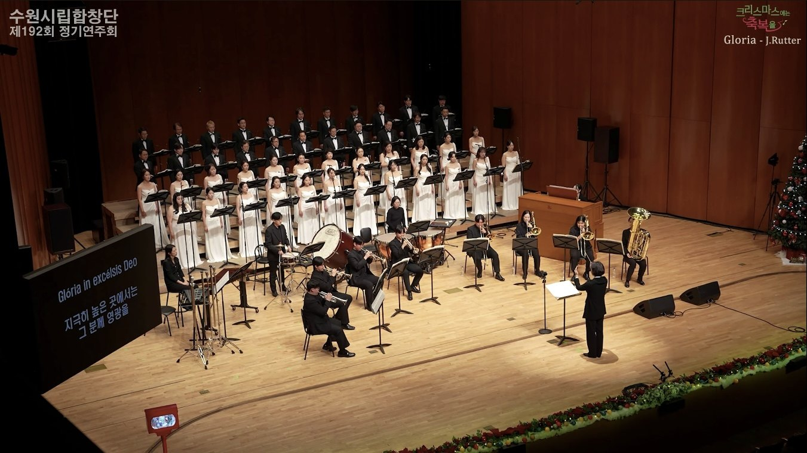
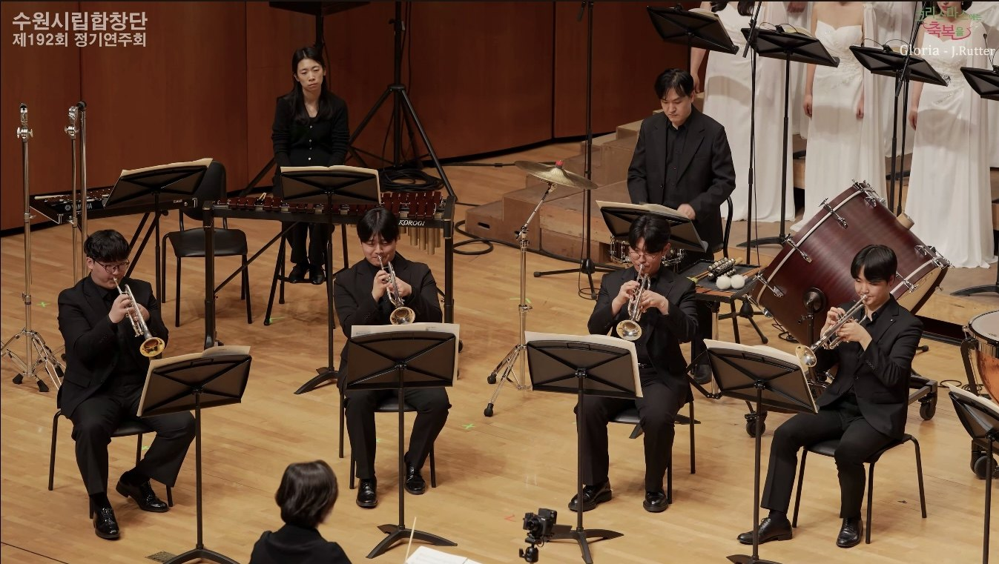
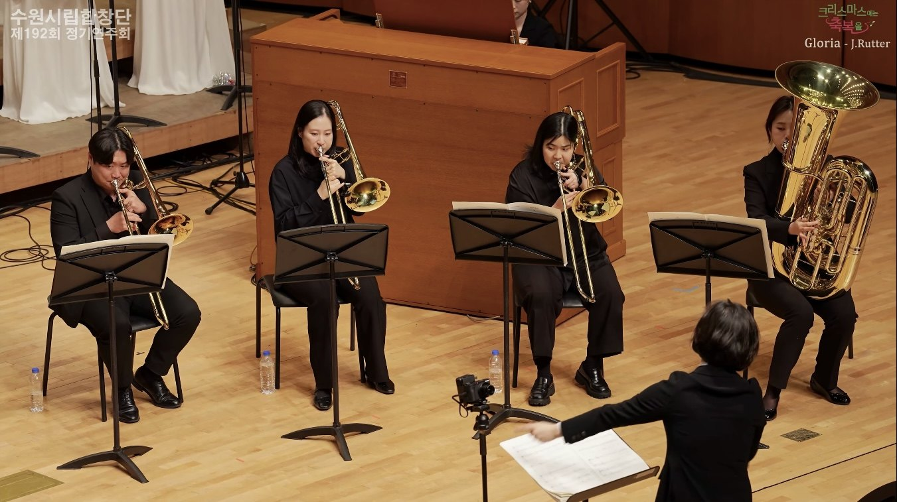

2025年12月18日 · コラボレーション
Christmas Blessing
水原市立合唱団 第192回定期演奏会
- 日時
- 2025年12月18日 · 7:30
- 会場
- Suwon SK Artrium · Grand Theater
- 合唱
- Suwon City Chorale
- オーケストラ
- Orchestra Lartife

公演について
水原市立合唱団第192回定期演奏会として開催されたクリスマス公演です。Orchestra Lartife は金管・打楽器を中心とした編成で、John Rutter の《Gloria》をはじめとするクリスマス・レパートリーに参加し、合唱団とともに豊かで鮮明な祝祭の響きを生み出しました。
主な演奏曲目
プログラム
John RutterGloria
Traditional / ArrangementsA Christmas Festival · Nativity Carol
Christmas RepertoireGesu Bambino · Winter Wonderland · Silver Bells · Feliz Navidad
公演アーカイブ
ギャラリー



公演プログラム冊子
PDFを見る ↗